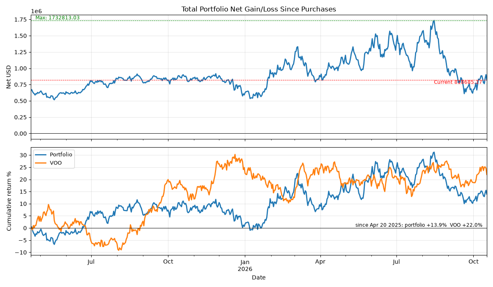
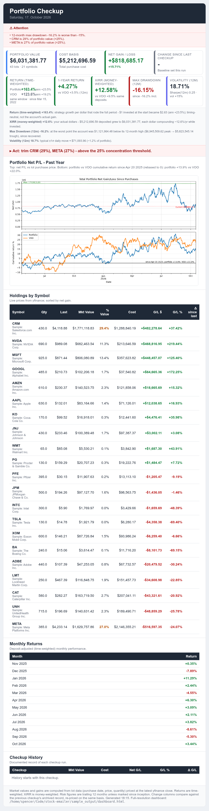

Stock Emailer
The problem
My stocks are spread across a bunch of accounts: several brokers, an advisory, a couple of positions I keep where I first bought them. Each account has an app, and each app tells me how it’s doing. None of them tell me how my portfolio is doing. And the one number I actually want, total net gain across everything, over time, since I bought, none of them compute.
So I built it. A report that lands in my inbox every morning, before I open a portfolio app.
What it does
Every cron run, it reads my position export, pulls a daily price series for each position, computes the numbers, draws a two-panel chart, wraps it in a self-contained HTML email, and sends it via Amazon SES.
- Single source of truth: the broker CSV (symbol, quantity, cost basis, acquisition date). A SQLite ledger makes each held position a lot, so a position you bought months ago still shows its whole arc, not just today.
- The headline number: total net gain/loss across all lots still held, dated from each lot’s own acquisition date forward. Not market-value today minus market-value then; the lot-level sum that actually tracks "am I ahead of what I paid."
- Cumulative return of the whole portfolio versus a benchmark over the same window, plus per-position price, day change, cost vs. market, and contribution to the whole.
- A self-contained HTML email: the chart inlined as base64, no attachments, nothing fetched from a URL. Idempotent, and testable with a dry-run that touches no network.


run_sample.py in the repo
reproduces both).
The shape of the pipeline
One CSV in, one email out, and a handful of stages carrying the state in between:
CSV export → SQLite lots ledger → daily price pull
(broker) (lots.db) (per symbol)
|
v
report math: net gain over time,
per-position cost vs. market
|
v
matplotlib two-panel chart HTML builder:
(total_net.png) inline the chart, build
the email
|
v
Amazon SES, or dry-run
(logs and saves, sends nothing)
Why it lives in a container
The schedule has to happen on the days I forget about it, so the whole thing ships as a Docker image with two services in one compose file:
- The cron service. Starts
cron, writes its crontab from what the app holds, and runs the report on schedule. Standard output tees to a log the container owns, sodocker compose logsshows the day it broke, not just that it went quiet. - The web service. The same image under gunicorn: a Flask preview UI where you render tomorrow’s email today and edit a lot, and the next run picks it up, because both services open the same SQLite file in WAL mode.
- Data is a bind mount, credentials are a read-only host mount, nothing secret goes into the image.
DRY_RUNis on by default, and the UI port binds to the LAN address, not0.0.0.0.
The boring part works as intended: it sits on a home server and runs on a machine I have to think about once a year.
Running it for real vs. running the repo
The README ships in two flavors. Point the CSV at your own broker export, set the
SES environment variables, and run main.py. Or run
python3 run_sample.py from the repo: a seeded, offline entry point
that writes a synthetic position CSV and price history, builds the real ledger
from them, and runs the real report pipeline end to end against
that data. The code in the repo is the code that runs; the only fake in it is
the numbers.
Tech & approach
Python throughout: pandas for the daily series,
matplotlib for the chart, sqlite3 for the ledger,
flask for the preview UI, boto3 for Amazon SES, and
numpy underneath. Packaging is Docker with a
docker-compose.yml carrying both services. No framework beyond Flask;
the email HTML is built as a string in code, no template engine.
What made it stick
The email is the product, not a side output. The chart gets inlined, the summary cards go on top, and the whole thing is one file that renders in any mail client. That one decision is what turns a data job into a daily brief I actually read.